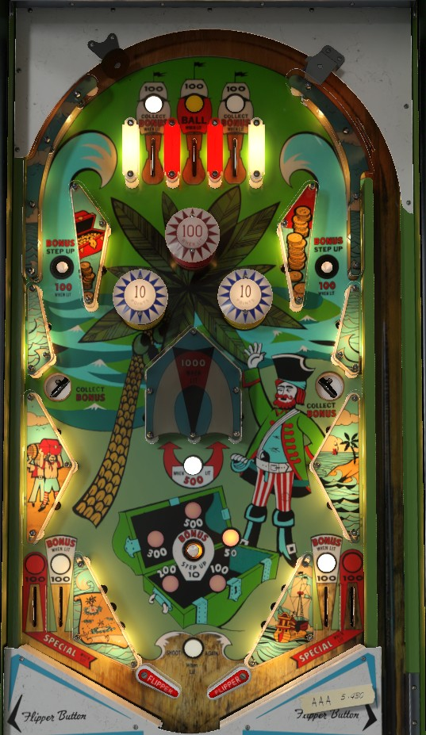

Focus primarily on building and collecting the Bonus value whenever possible. The Bonus value can be 50, 100, 200, 300, or 500 points. The Bonus value is advanced by pressing any of the game's 3 rollover buttons, located in the two orbits and near the flippers. To collect the bonus, shoot a side saucer at any time, or make the left or right top lane or near out lane when lit. One top lane and one near out lane are lit at a time, and they alternate based on 10-point switch hits. Top lanes and out lanes score 100 points when not lit. The Bonus value is held from ball to ball and game to game until it is maxed out at 500, at which point it will be reset back to 50 the next time the ball drains.
The blue (lower) bumpers always score 10 points. The red (upper) bumper scores 10 points or 100 when lit, and is lit when the Bonus value is exactly 100 or 300.
The Bonus Step Up rollover buttons in the orbits score 1 point or 100 when lit, and they are lit only when the Bonus is maxed out at 500 points. The center Bonus Step Up button always scores 10.
The center u-turn scores 500 points. This is tempting, but can lead to center drains off the large posts if your shooting isn't accurate. Maxing out the bonus and collecting it at the side saucers is usually a safer way to earn points by the 500s.
On the first and last balls of the game, Pirate Gold enters a "Special mode" if and only if the 1s digit of the score is 0. In "Special mode", the center top lane is lit for extra ball, the center u-turn scores 1,000 points instead of 500, and the far out lanes are lit for Special, which can be set to a free game or an extra ball. The center u-turn is much more lucrative at 1,000 points than at 500, so if you have ball control while it's worth 1,000, go ahead and shoot for the u-turn.
The Bonus is not awarded at the end of the ball, it can only be collected at the side saucers during gameplay. There are no in lanes. Flippers back up directly to the slingshots. There is no center post, free ball gate, or kickback feature. Tilt can be set to end the entire game or just the current ball in play. Specials and replay scores can be set to award extra balls instead of free games, but I do not believe Specials or extra balls can be set to award points instead.
The below picture of Pirate Gold's playfield was taken from the VPX recreation by Scottacus.

| If you need... | Try... |
| points | |
| points | |
| points | |
| points | |
| points | |
| points or more |